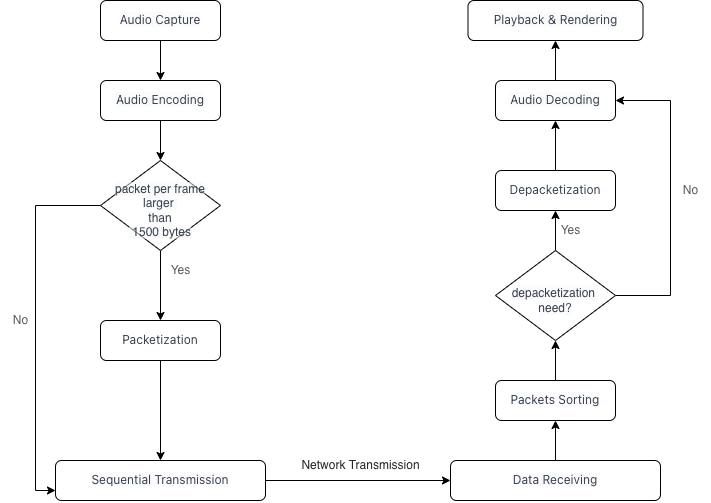

The current livestreaming multimedia ecosystem is showing diverse and robust growth trends. It covers
livestreaming content from both institutions and individuals in various fields to meet the diverse needs of users.
In this ecosystem, major tech companies are strategically involved in different areas to provide richer,
practical, and entertaining livestreaming experiences.
Alibaba Group demonstrates strong capabilities in the livestreaming sector. Its livestreaming e-commerce combines
shopping and entertainment, offering consumers immersive shopping experiences. Through methods like hosts
showcasing products and interactive Q&A sessions, consumers are engaged in making purchases. Additionally, Alibaba
also offers fundamental livestreaming cloud services, spanning education and gaming sectors, providing technical
support for creating livestreaming platforms for businesses and individuals.
Chia Mobile MiGu, an integrated media platform, focuses on providing diverse livestreaming content. Particularly
in
large-scale event livestreaming, MiGu offers real-time broadcasts of significant events like sports competitions
and music concerts, meeting users' demand for immediate experiences. Moreover, MiGu experiments with
virtual-physical interactions using technologies like digital avatars, creating a more enriched virtual
interactive experience for users.
ByteDance plays a crucial role in interactive entertainment, online education, and conferencing. Its TikTok
platform has become a globally popular short video platform, providing users with abundant entertainment content,
including livestreaming. ByteDance has also ventured into livestreamed educational content to accommodate learners
seeking flexible learning approaches. In the business sector, its livestreamed conferencing solutions offer
efficient remote communication and collaboration platforms for enterprises.
Terminology
This document uses the following terms with the specific meanings defined here. Where possible these meanings are
consistent with common usage. However, note that common usage of some of these terms have multiple, ambiguous, or
inconsistent meanings. The definition here will take precedence. When terms are used with the specific meanings
defined here they will be capitalized. When possible reference to existing standards defining these terms is
given.
WebRTC
Web Real-Time Communication
Audio Vivid
The first AI-based audio encoding and decoding standard, released by the UHD World Association (UWA). Within
the Audio Vivid three-dimensional space, sound objects can be precisely positioned and moved freely, while also
presenting richer sound details, constructing expansive or subtle three-dimensional soundscapes.
Use Cases
5G Cloud Box (UC-CB)
A "Cloud Box" can be understood as a cloud-based private room, similar to the private room we have in our real
lives. Friends can come together in these rooms to chat, watch movies, and watching sports events. In sports
broadcasts, fans can participate in predictions and discussions about ongoing matches through the "5G Cloud Box"
feature, enabling them to share their insights and forecasts in real-time. The Cloud Box feature bridges the gap
between individuals, enhancing their immersive experience and interaction.
In order to provide a more immersive user experience, spatial audio is utilized in WebRTC.
5G Cloud Box
Real-time Live Commerce (UC-RLC)
Real-time Live Commerce, also known as real-time livestream shopping, is an innovative retail trend that merges
real-time streaming
with e-commerce. In Live Commerce sessions, businesses and brands showcase their products or services on live
online platforms, such as social media and e-commerce websites, while simultaneously engaging with the audience
in direct interactions. During these live sessions, hosts or salespeople introduce product features, demonstrate
usage, address viewer inquiries, and offer exclusive deals or limited-time promotions.
Viewers can actively participate by using real-time commenting or chat features to interact with the hosts. They
can ask questions, express their interest in purchasing, and even share their own product experiences with
fellow viewers. When a viewer shows interest in a particular product, they can instantly make a purchase using
dedicated links or designated purchasing methods.
Live Commerce provides a uniquely interactive and entertaining shopping experience. Viewers gain immediate
insights into product details, witness live demonstrations, and benefit from additional information provided by
the hosts. This high level of engagement not only enhances consumer confidence in making purchase decisions but
also introduces a dynamic and powerful approach to brand marketing.
WebRTC can be used in this Scenario.
Requirements
Generic Packetization and Depacketization Mechanism for Audio Transmission
When transmitting audio data, sending audio packets with a size greater than 1500 bytes per frame will result in
transmission failure.
Spatial audio codecs like Audio Vivid have audio packets per frame that are
larger than
1500 bytes, requiring developers to handle packetization and depacketization separately. In order to improve
development efficiency,
a generic packetization and depacketization mechanism for audio transmission is needed.
The mechanism should not be mandatory, for some proprietary audio codecs may have its own packetization and
depacketization mechanisms.
A proposed packetization and depacketization workflow can be outlined as follows:

a proposed Packetization and Depacketization Workflow
Receiving sounds from other devices when in background
An iOS device that has the microphone enabled and then switches to the background is unable to hear sounds from
other devices when some device unmutes.
This issue can be reproduced as follows:
Devices A and B join a WebRTC conference, B is an iOS device, A is any device
Both devices activate microphones
Device B goes to the background (e.g., Home button).
Device A's voice is audible to B.
Device A mutes its microphone.
Device A unmutes and speaks.
Device B can't hear A, even if B goes back to the foreground.
Statistics for Audio and Video Stuttering and Initial Frame Time
Currently, WebRTC has encompassed Quality of Service (QoS) metrics including resolution, frame rate, bit rate, and packet loss, and interfaces have been exposed for developers to access various metrics. However, metrics related to audio and video stuttering, as well as initial frame time, have not yet been provided for statistical analysis and reporting. In WebRTC applications such as interactive live streaming and video conferencing, metrics concerning audio and video stuttering, along with initial frame time, are considered crucial QoS indicators. They offer enhanced insights into the quality of audio and video communication.
The definition of stuttering needs to be officially defined, and developers can customize the duration of the interval that qualifies as a single instance of stuttering.